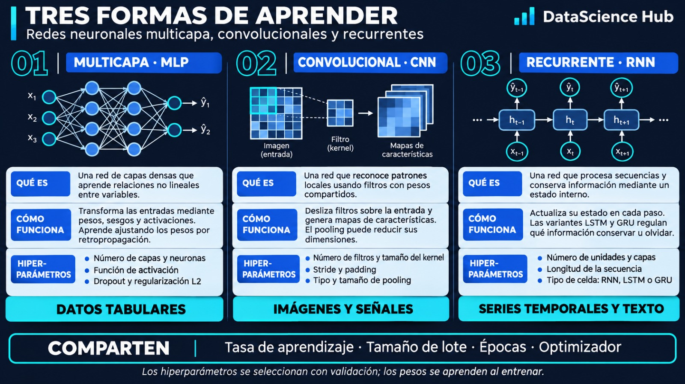

Ricardo Castanneda
Grupo 3
Portal académico para integrar análisis exploratorio, modelado predictivo, redes neuronales y visualización interactiva. El objetivo es mostrar el proceso completo: comprender los datos, construir modelos, evaluar su desempeño y comunicar resultados útiles.
Equipo académico del Grupo 3 de la Maestría en Estadística, mención Ciencia de Datos e Inteligencia Artificial.
Grupo 3

Grupo 3

Grupo 3

Grupo 3
Esta sección le da a la página una secuencia lógica y evita presentar herramientas aisladas. El visitante puede entender cómo se llega desde una pregunta hasta una decisión basada en evidencia.
Definir la pregunta, objetivo analítico y variable de interés.
Revisar calidad, distribuciones, faltantes, outliers y relaciones.
Transformar, codificar, escalar y seleccionar variables.
Entrenar modelos estadísticos, ML o redes neuronales.
Validar desempeño, interpretar resultados y comunicar hallazgos.
En lugar de limitar la página a “ML vs. DL”, conviene presentar un mapa de técnicas. Así se ve más académico y permite crecer con nuevos trabajos del grupo.
Regresión logística, árboles, Random Forest, XGBoost y otros modelos para predecir clases o resultados numéricos.
Clustering, componentes principales y técnicas para descubrir estructuras sin una etiqueta previa.
Arquitecturas feedforward, funciones de activación, optimización, regularización y criterios para evitar sobreajuste.
Importancia de variables, sensibilidad y análisis de errores para que las predicciones sean entendibles y accionables.
Una ruta académica para explicar las arquitecturas de inteligencia artificial, experimentar con sus decisiones y aplicar modelos en problemas industriales y clínicos. El portal reúne aprendizaje guiado, simuladores, aplicaciones Shiny y documentación.
¿Podemos anticipar una posible falla en un equipo industrial antes de que provoque una parada no planificada? Este proyecto plantea una comparación de modelos para apoyar decisiones de mantenimiento a partir de variables operativas y, cuando están disponibles, señales de sensores.
Las fallas inesperadas generan interrupciones operativas, reparaciones urgentes y posibles riesgos de seguridad. El mantenimiento reactivo actúa después del evento.
Usar datos de funcionamiento para identificar patrones asociados a fallas y comparar enfoques tradicionales de Machine Learning con redes neuronales.
Comparar desempeño y errores —en especial las fallas no detectadas— antes de elegir un modelo. Las predicciones orientan el análisis, no sustituyen la inspección técnica.
La exposición sigue cuatro momentos didácticos. Cada recurso prepara al visitante para comprender el experimento final en R Shiny.
La imagen resume la estructura, el funcionamiento y los hiperparámetros de redes multicapa (MLP), convolucionales (CNN) y recurrentes (RNN).

Recursos audiovisuales organizados por arquitectura. Se conservan los nombres de los cuatro MP4 que ya utiliza tu repositorio en la carpeta videos/.
Capas densas, propagación hacia adelante y ajuste de pesos.
Filtros, convoluciones y detección de patrones locales.
Memoria, estados ocultos y compuertas en secuencias temporales.
Ejemplo complementario sobre el procesamiento secuencial.
Reproducción dentro de la página cuando Facebook autorice la inserción. Algunos reels restringen la reproducción integrada por privacidad, configuración o navegador.
Abrir reel directamente ↗Primero experimenta con el simulador MLP integrado. Después, accede al segundo laboratorio para ampliar la exploración de redes neuronales.
El laboratorio traslada la comparación metodológica a una interfaz en la que se pueden explorar datos de maquinaria, ajustar modelos y examinar resultados.
Situación: una máquina puede mostrar señales de degradación antes de fallar. El objetivo analítico consiste en estimar el riesgo de falla con información disponible antes del evento, evitando usar variables que revelen el resultado futuro.
Aplicación académica desarrollada en R Shiny para explorar la clasificación de eventos cardiovasculares a cinco años. El prototipo integra análisis descriptivo, entrenamiento, evaluación y predicción individual o por lotes.
Variables predictoras: edad, síntomas, frecuencia cardíaca promedio (FC) y variabilidad de la frecuencia cardíaca (VFC). La baja frecuencia de eventos exige analizar sensibilidad, precisión y falsos negativos.
770 registros para ajustar los pesos, 191 para validación y 239 para prueba, en la ejecución compartida. Estandarización basada únicamente en el conjunto de entrenamiento.
MLP, SimpleRNN, LSTM, GRU y CNN 1D. La aplicación compara sus métricas de validación. Las redes recurrentes y convolucionales son experimentales sobre datos tabulares, no sobre series cardíacas reales.
CNN 1D registró el mayor F1 macro (0,5379); LSTM, el AUC más alto (0,6919); y MLP, el menor LogLoss (0,5304). Son resultados de validación reportados en el contenido original del portal, no de prueba externa.
Utiliza el laboratorio interactivo para revisar los datos, entrenar y comparar cinco arquitecturas y explorar predicciones académicas.
Abrir CardioPredict AI ↗Herramientas empleadas para construir aplicaciones y recursos de consulta para comprender, evaluar y comunicar modelos de Ciencia de Datos e Inteligencia Artificial.
Programación estadística, interfaces interactivas, visualización y despliegue de aplicaciones.
Documentación oficial de Shiny ↗Construcción, entrenamiento y evaluación de redes neuronales desde R y Python.
Keras para R ↗Modelos clásicos, preparación de variables, particiones y validación.
Documentación scikit-learn ↗Exactitud, precision, recall, F1 y ROC-AUC: métricas complementarias según el problema.
Guía de evaluación ↗Documentar origen de los datos, transformaciones, particiones, semillas, versiones y limitaciones.
R Markdown ↗Control de versiones, almacenamiento de recursos y publicación de este portal estático.
Guía de GitHub Pages ↗Revisar faltantes, sesgos, valores extremos, errores y coherencia antes del modelado.
Registrar los datos, parámetros y decisiones para que la comparación pueda repetirse.
Comunicar limitaciones, evitar extrapolaciones injustificadas y no automatizar decisiones sensibles sin supervisión.